API Backend

El compendio interactivo del universo Marvel
Marveldex es un backend desarrollado con NestJS y MongoDB diseñado como un compendio interactivo de personajes del universo Marvel (estilo Pokédex). Permite consultar, buscar y filtrar héroes y villanos.
- NestJS
- MongoDB
- TypeScript
- REST API